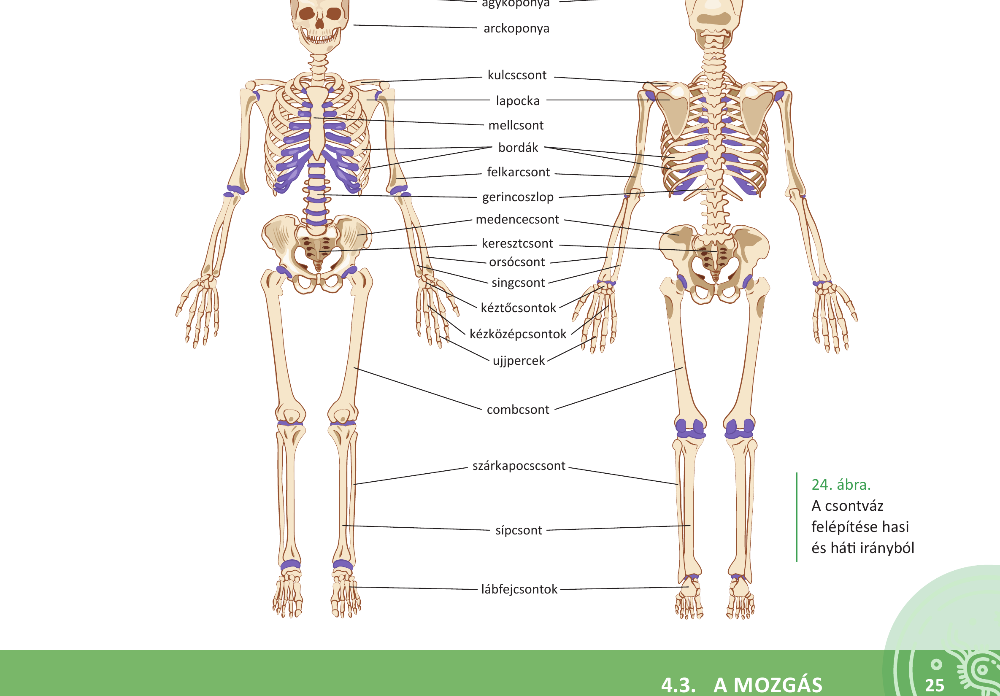
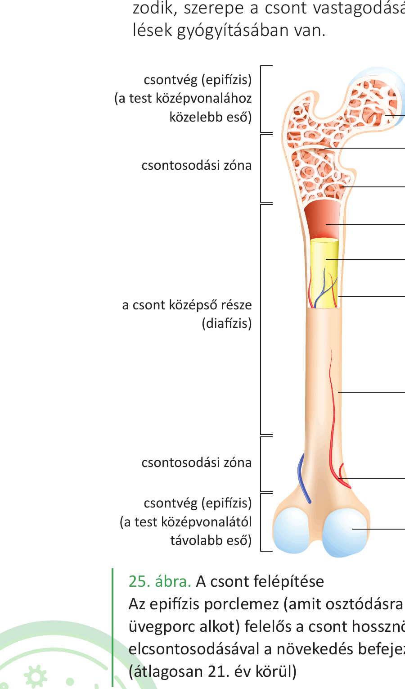
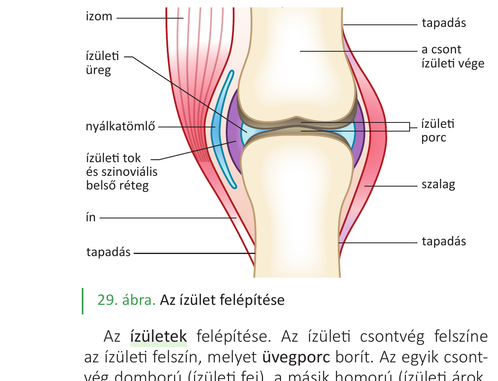

33. Csontok és kapcsolataik¶
A mozgást két szervrendszer valósítja meg: a csontrendszer passzív módon, a vázizomrendszer aktívan vesz részt a mozgások kivitelezésében. Ez a tétel a passzív részt, a csontvázat tárgyalja.
A csontváz biológiai funkciói¶
- A mozgás passzív szervei alkotják.
- Belső szilárd váz, amely meghatározza a test alakját és méretét.
- Biztosítja egyes szervek (pl. agy) védelmét.
- Helyet biztosít a vörös csontvelőnek, így részt vesz a vérképzésben.
- A szervezet kalciumraktára (a test Ca²⁺-tartalmának 90%-a a csontokban van).
A gerinces állatoknak és az embernek belső, csontos vázrendszere van, szemben a gerinctelen állatok többségére jellemző külső vázzal. A belső váz nem akadályozza a növekedést.
A csontvázrendszer felépítése¶
Nagyobb egységei: a fejváz (koponya), a törzsváz (gerincoszlop és mellkas) és a végtagok csontjai.
Koponya¶
Az agykoponya és az arckoponya részekből áll.
- Agykoponya: 7 csont (2 páros: falcsontok, halántékcsontok; 3 páratlan: homlokcsont, ékcsont, nyakszirtcsont). A nyakszirtcsonton található az öreglyuk, ahol a nyúltvelő folytatása, a gerincvelő lép ki. Az ékcsont tartalmazza a töröknyerget (az agyalapi mirigyet védi). A csontok varratos összeköttetésekkel kapcsolódnak (idősebb korban összecsontosodnak). Magzati korban a csontok között kötőszövetes lemez, a kutacs található — ez könnyíti a szülést, és az agy további növekedését.
- Arckoponya: csontjai a kor előrehaladtával összenőnek, kivéve az állkapocscsontot, amely ízülettel kapcsolódik a halántékcsonthoz.
Gerincoszlop¶
Oldalnézetben kétszeres S görbületű — ez a koponya rugalmas alátámasztását teszi lehetővé. Szelvényezett, általában 32–35 csigolyából áll. Szakaszai:
- nyaki: 7 csigolya (első kettő: fejgyám/atlas és tengely/axis — a fej nagy fokú mozgékonyságát biztosítják),
- háti: 12 csigolya (bordákkal ízesülnek),
- ágyéki: 5 csigolya,
- keresztcsonti: 5 csigolya (felnőttkorra egységes keresztcsonttá nőnek össze),
- farkcsonti: 4–6 csigolya.
A mozgékony csigolyák porckorongokkal, kötőszöveti szalagokkal, ízületekkel kapcsolódnak. A csigolyák mérete lefelé egyre nő (a növekvő terhelés miatt).
A csigolya részei: csigolyatest (vérképzés zajlik benne), csigolyaív (a csigolyalyukat határolja), tövisnyúlvány (hátizmok tapadási helye), harántnyúlványok (bordák ízesülnek hozzá), ízületi nyúlványok (csigolyák egymáshoz ízesülése). A csigolyalyukak összessége alkotja a gerinccsatornát, amiben a gerincvelő foglal helyet.
Mellkas¶
A mellkast 12 pár borda és a szegycsont alkotja.
- 7 pár valódi borda: külön-külön saját porccal ízesül a szegycsonthoz,
- 3 pár álborda: közös porccal kapcsolódik egymáshoz és a 7. borda porcán át a szegycsonthoz,
- 2 pár lengőborda: nem kapcsolódik a szegycsonthoz, vége a hasfal izomzatába ágyazódik.
Hátul a bordák a hátcsigolyák testéhez és harántnyúlványaihoz ízesülnek. A szegycsont részei: markolat, test, kardnyúlvány — lapos csont, vörös csontvelőt tartalmaz.
Végtagok csontjai¶
A végtagokon függesztőövet és szabad végtagot különböztetünk meg.
Felső végtag — vállöv és szabad felső végtag:
- Vállöv: kulcscsont (szegycsonthoz és lapockához ízesül), lapocka (a hátizomba ágyazódik).
- Szabad felső végtag: felkarcsont (humerus), orsócsont (radius, a hüvelykujj felőli) és singcsont (ulna), kéztőcsontok (8 db), kézközépcsontok, ujjpercek (ujjanként 3, a hüvelykujj esetén 2).
Alsó végtag — medenceöv és szabad alsó végtag:
- Medenceöv: a páros medencecsont (csípőcsont + szeméremcsont + ülőcsont kb. 18 éves korra összeforr) és a keresztcsont. A medence alakja másodlagos nemi jelleg: nőknél szélesebb és alacsonyabb, a szeméremcsontok közti szög tompább (a szüléshez fontos).
- Szabad alsó végtag: combcsont (femur), sípcsont (tibia, a nagylábujj felőli) és szárkapocscsont (fibula), lábtőcsontok (7 db), lábközépcsontok, ujjpercek. A sípcsont alsó kiszélesedő része a belső boka, a szárkapocscsonté a külső boka.
A csontok alakja¶
- Csöves csontok: hosszúkás, a végükön kiszélesedő csontok. Középső részük (diafízis) cső alakú, a két végük (epifízis) szivacsos állományt tartalmaz. Pl. felkarcsont, combcsont (hosszú), kézközépcsontok (rövid).
- Lapos csontok: két vékony, tömör állományú csontréteg közötti teret szivacsos csontállomány tölti ki vörös csontvelővel. Pl. lapockacsont, agykoponyacsontok, medencecsont, bordák.
- Köbös csontok: a tér különböző irányaiba közel azonos kiterjedésűek, szivacsos állománnyal, a vérképzés fő helyei. Pl. csigolyatestek, kéz- és lábtőcsontok.
A csontok felépítése (kívülről befelé)¶
- Csonthártya: erekben és idegekben gazdag rostos kötőszövet. Belső rétegében csontképző sejtek vannak — itt indul a csont vastagodása és a sérült csont regenerációja.
- Tömör állomány: kívül helyezkedik el, a koncentrikus körökbe rendeződött csontsejtek és a sejt közötti állomány alkotja.
- Szivacsos állomány: a csontszövet lemezek és csövek finom rendszere. Nagy teherbírású, de könnyű. Üregeit vörös csontvelő tölti ki, amely a vérképzésben vesz részt.
- Velőüreg: a csöves csontokban belül található, sárga csontvelő (zsírszövet) tölti ki.
- Csontbelhártya: a velőüreget belülről borítja, lebontó szerepe van.
A csonthossznövekedését az epifízis porclemez (üvegporc) biztosítja; elcsontosodása után (átlagosan 21. év körül) a növekedés befejeződik.
A csontszövet (Havers-rendszer)¶
A csontszövet lemezes szerkezetű:
- A nyúlványos csontsejtek koncentrikus körökbe rendeződnek.
- A központi Havers-csatornában vérerek és idegek futnak.
- A koncentrikus lemezekből álló egység neve oszteon.
- A Havers-csatornákat sugárirányban a Volkmann-csatornák kötik össze.
A csontszövet sejtjei:
- Csontsejtek (oszteociták): a kész szövet sejtjei.
- Csontfaló sejtek (oszteoklasztok): lebontják a csontszövetet.
- Csontépítő sejtek (oszteoblasztok): új csontot építenek.
A csontszövet ezért élete folyamán folyamatosan átépül az aktuális terhelésnek megfelelően.
A csontok összetétele¶
- Szerves (30-40%): főleg kollagén fehérjerostok → a csontok rugalmasságát biztosítják.
- Szervetlen (60-70%): kalciumsók (40%, pl. hidroxiapatit Ca₅(PO₄)₃(OH), CaCO₃) → a csontok szilárdságát és keménységét biztosítják.
- Víz: kb. 20%.
Kísérlet: ha a szervetlen állományt sósavval kioldjuk, a csont elveszti keménységét, gumiszerűen hajlíthatóvá válik. Ha a szerves állományt hevítéssel elégetjük, a csont ridegen-törékenyen viselkedik.
Az életkor előrehaladtával a foszfát-, kollagén- és víztartalom csökken, a karbonáttartalom nő → a csontok törékenyebbek lesznek (csontritkulás).
A kalcium-anyagcsere szabályozása¶
A csontok kalciumraktárként szabályozott módon adnak le és vesznek fel kalciumot. Három fő hormon:
- Parathormon (mellékpajzsmirigy): emeli a vér kalciumszintjét. A csontfaló sejteket serkenti, a vesében serkenti a kalcium visszaszívását, és aktiválja a D-vitamin szintézisét.
- Kalcitriol (a D-vitamin aktív alakja): a bélben növeli a kalcium- és foszfátfelszívást, fokozza a csontok Ca²⁺-felvételét.
- Kalcitonin (pajzsmirigy): csökkenti a vér kalciumszintjét. A csontépítő sejteket serkenti.
- Ösztrogén: gátolja a csontfaló sejtek működését. Idősebb korban az ösztrogénhiány csontritkuláshoz vezethet.
A csontok összeköttetései¶
Folytonos összeköttetések¶
A kapcsolódó csontok között anyagfolytonosság van:
- Csontos összenövés: az eredetileg önálló csontok egybeforrnak (pl. keresztcsont 5 csigolyából, medencecsont, idősebb korban az arc- és agykoponyacsontok).
- Porcos összeköttetés: a csontokat porc köti össze (pl. csigolyák közötti porckorongok).
- Kötőszövetes összeköttetés: kötőszöveti szalagok kapcsolják az érintkező csontokat (pl. koponya varratai).
Megszakított összeköttetések — az ízületek¶
Az ízületekben a kapcsolódó csontok között kisebb távolság van, ami lehetővé teszi az elmozdulást. Az ízületeket szerveknek tekintjük, mivel önmagukban lezárt szerkezeti és működési egységek.
Az ízületek felépítése:
- Ízületi felszín: az ízületi csontvég felszíne, melyet üvegporc borít. Az egyik csontvég domború (ízületi fej), a másik homorú (ízületi árok/vápa).
- Ízületi tok: termeli az ízületi nedvet, amely súrlódáscsökkentő, csúszóssá teszi a porcfelszínt.
- Ízületi szalagok: erős kötőszöveti szalagok az ízületet összetartják.
- Külső légnyomás is hozzájárul az ízület összetartásához.
Az ízületek típusai (az elmozdulás mértéke, iránya és a felszínek alakja szerint):
- Feszes ízületek: tényleges mozgásra alkalmatlanok, ízületi felszíneik szabálytalanok, szalagkészülékük igen feszes (pl. keresztcsont és csípőcsont közötti ízület).
- Mozgékony ízületek: a kapcsolódó csontok nagyobb elmozdulását teszik lehetővé. A legtöbb ízületünk ide tartozik. Az ízületi felszín alakja és az elmozdulás iránya alapján további csoportosítás lehetséges.
- Szimfízis (átmenet): pl. a két szeméremcsont közötti kapcsolat (porc és szalagok), rugalmas tágulása a szülésben fontos.
Ábrák¶

Az emberi csontváz áttekintő képe hasi és háti irányból: koponya, gerincoszlop, mellkas (szegycsont és bordák), vállöv (kulcscsont, lapocka), felső végtag (felkarcsont, orsócsont, singcsont, kéztő, kézközép, ujjpercek), medence, alsó végtag (combcsont, sípcsont, szárkapocscsont, lábtő, lábközép, ujjpercek).

A csöves csont szerkezete: csonthártya, tömör állomány/kéreg, szivacsos állomány vörös csontvelővel, velőüreg sárga csontvelővel, epifízis porclemez (csonthossznövekedéséért felelős, kb. 21. évre elcsontosodik), üvegporc/ízületi porc a végeken.

Az ízület szerkezete: ízületi felszínek üvegporccal borítva, ízületi üreg ízületi nedvvel, ízületi tok, szalag, az izom inakon át kapcsolódik a csonthoz (eredés, tapadás).
Az anyag a 2. tankönyv 22–28. oldalain található.